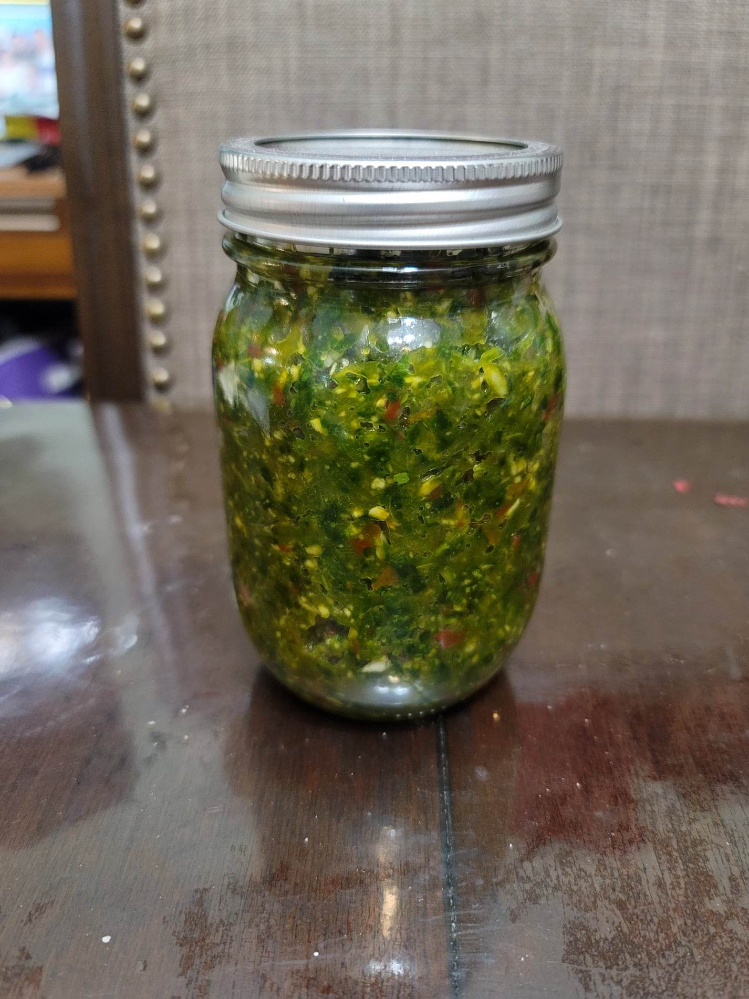

Green Seasoning

Ingredients:
- 1 bunch Culantro
- 1/2 bunch Parsley
- 2 stalks Celery or Chinese celery
- 3 Scallions
- 10 cloves Garlic
- 1 small Onion
- 1 inch Ginger
- 8 sprigs Thyme
- 1 Scotch bonnet
Instructions:
- Place all the ingredients into a food processor. Pulse until mostly smooth or to preference. Use immediately or store in the fridge or freezer.